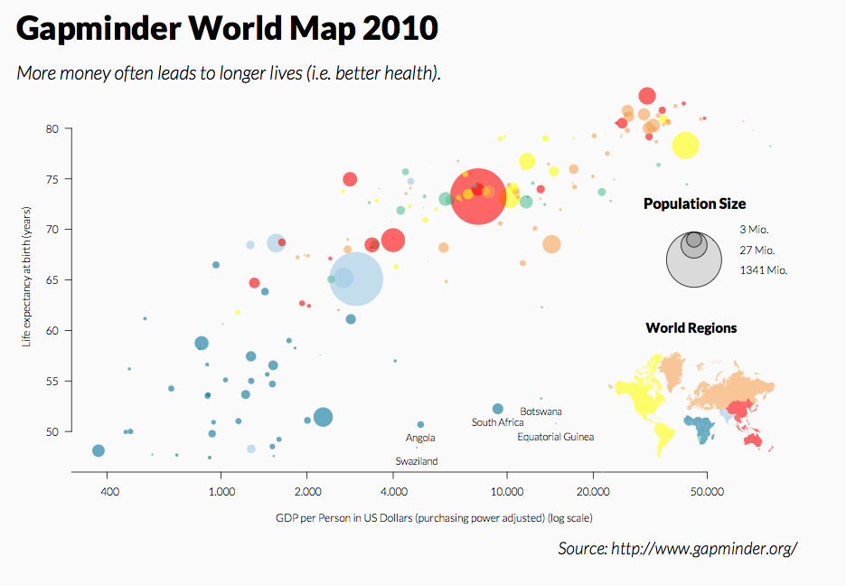
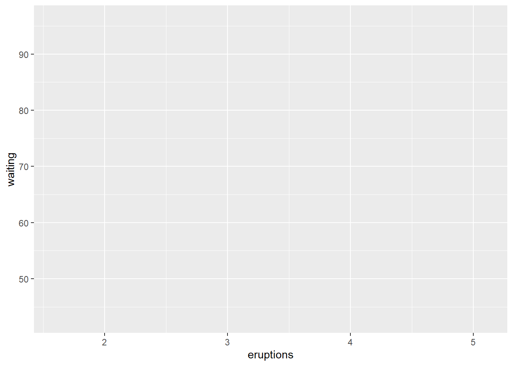
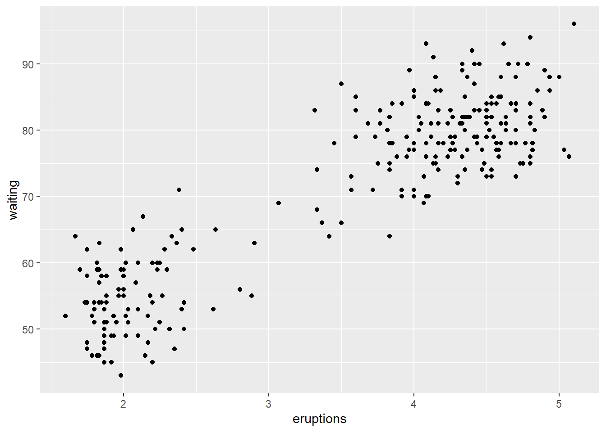

#install.packages(tidyverse)
library(tidyverse)
#install.packages(datasets)
library(datasets)1 A Grammar of Graphics
Leland Wilkinson1 developed the concept of a grammar of graphics by considering the components of a graphic to be like the syntax of language. Wilkinson’s general thesis was that there is a flow of information from data to graphic that can be applied regardless of the makeup of the data or the type of graph being used. Graphics, like sentences, only make sense when the parts articulate with one another.
Have a look at this graph:

This is a reproduction of a well-known graph produced by Gapminder, an organization aimed at using data to dispel misinformation using fact-based data visualizations. This graph is a scatterplot showing the relationship between a nation’s gross domestic product (GDP) and its life expectancy. There is also additional information being conveyed about the nations being illustrated: the region of the world to which they belong, and their population size. From the graph, we can see a few patterns:
There is a fairly clear, positive relationship between GDP and life expectancy.
European nations are generally weathier/longer-lived nations, while African nations tend to be poorer and have lower life expectancy. Asian and American nations tend to fall between the middle and upper end of this distribution.
The most populous nations fall in the middle of this distribution.
There are some rules governing how the data is displayed, but, like the rules of grammar, these are not necessarily intuitive to someone who hasn’t spent their life exposed to them. It’s sometimes easier to think of ways to break these rules in order to demonstrate their operation:
What would happen if we were to plot the sizes of points based on their order in the dataset?
What would happen if the point colors were representing more than one variable (e.g., some were population size, some were trade deficit)?
What would happen if the maximum values on the x and y axes were suddenly expanded to 100,000,000,000? Or if they were set to negative values?
The answer to these questions is the same: the graph would make less sense in terms of what it is trying to communicate. The graphic is an object that is made to be understood by an audience, and as such requires a clear flow from the data to its representation on the page or screen. In R, that flow exists as a mapping between the stored data and graphical elements.
How ggplot2 works with the grammar of graphics
The ggplot2 package (part of the tidyverse family) was designed around the grammar of graphics concept. In particular, it treats elements of the plot as layers that can be added to the graphic and connect to the data by mapping ‘aesthetics’ (shortened to aes in the code). The principal components onto which the data are mapped are the graphic elements that represent them, which are termed the geometries (or geom).

If this sounds a little philosophical, that’s OK. At this stage it’s a pretty abstract thing to consider. It’s probably a good idea to see how it works in practice.
The anatomy of a ggplot2 function call
Before we get started, we’ll need to load the tidyverse package, and we’ll also load a package called datasets that, you guessed it, contains a lot of datasets we might explore:
Note the commented code with the install.packages function. As we’ve discussed, it’s not necessary to run this if the package may already be installed on your machine. Having it in comments lets us quickly add it if needed.
Also, you may be wondering about what you’re looking at in the grey box above, as it’s a little different from the code formatting we’ve used in past labs. What you’re seeing above is called a code chunk. Code chunks are executable, meaning that I can add some code into this webpage and R will run it and return the output inside of the same document. You’ll be seeing these more frequently in labs going forward, and you’ll learn how to use them yourself when we get to Quarto documents later in the course.
The main function in ggplot2 is the ggplot function. This tells R that we want to create an object that will have these different layered components, and through the arguments we provide we will define the aesthetic mapping.
ggplot()
This is showing an empty ggplot object. It doesn’t have any layers to plot, it doesn’t have any dimensions, and it doesn’t have any other characteristics. The first thing we need is some data: without the data, there is nothing to build on. Drawing on the datasets package, we’ll use a set of eruptions from the Old Faithful geyser in Yellowstone National Park. This is a dataframe, so we can use head to take a look at it.
head(faithful) eruptions waiting
1 3.600 79
2 1.800 54
3 3.333 74
4 2.283 62
5 4.533 85
6 2.883 55This table is showing two variables. The first is the duration of an eruption in minutes (eruptions), and the second is the number of minutes that follow until the next eruption (waiting). Before we get much further, let’s convert this to a tibble so we’re not switching between the tidyverse and base R conventions:
geyser<-as_tibble(faithful)
geyser# A tibble: 272 × 2
eruptions waiting
<dbl> <dbl>
1 3.6 79
2 1.8 54
3 3.33 74
4 2.28 62
5 4.53 85
6 2.88 55
7 4.7 88
8 3.6 85
9 1.95 51
10 4.35 85
# ℹ 262 more rowsLooks good. Now we can add this tibble as data to our ggplot function:
ggplot(data=geyser)
Again, not much is going on. The grammar depends on an aesthetic mapping between data and graphical elements, so with data alone it isn’t able to make any changes to the graphic. We’ll add this mapping next:
ggplot(data=geyser,mapping=aes(x=eruptions,y=waiting))
Notice that we’ve given the ggplot function two arguments: a data argument and a mapping argument. The mapping argument uses another function, which is aes. This function takes the variables that you want to display and assigns them to some visual aspect of the graph. These might include:
x, y position
fill and line color (ggplot2 uses British spelling “colour” by default but also accepts the American spelling)
size
shape
In this example, we’ve assigned the two variables to the x and y position using these as arguments to the aes function. A little more is happening here now. We’ve got some grid lines, and the axes have scales and labels. Now we can see where a geometry representing our data will go. The next step is to add such a geometry as a layer. The ggplot2 convention is to refer to these as geoms, and most of the function calls will start with geom_. Here, we’ll make a scatterplot by adding a layer with the + operator and using the and the function geom_point:
ggplot(data=geyser,mapping=aes(x=eruptions,y=waiting)) +
geom_point()
Now we have the pieces in place that allow us to recognize a graphic, and can identify some patterns in the data. In particular, longer eruptions tend to be followed by longer wait times. Eruptions also seem to fall into one of two distinct groups, one shorter and one longer.
To review, the way that ggplot2 works at its most basic level is by incorporating the following aspects of the grammar of graphics:
A dataset
A set of aesthetic mapping arguments
A geometry
When calling the function, we can do so in this form:
ggplot(data=dataset, mapping = aes(mapping arguments)) + geometry
In our example above, the dataset is the geyser tibble from the Old Faithful data; the mapping arguments were assigning the eruptions variable to the x-position and the waiting variable to y-position; and the geometry is a point layer, by the geom_point function, which is used to create a scatterplot.
One last note about this: while the aesthetic mapping was given as an argument in the ggplot function, the geometry was added as a separate layer and added to the call using the + operator. This is the way in which layers like geometries are added to a graphic. While geometries are one kind of layer, there are additional things we might want to layer on as well:

As we’ll see going forward, we can add additional layers using this + operator to modify the visual look of the plot.
Wilkinson, Leland. 2005. The Grammar of Graphics. Chicago: Springer Science & Business Media. https://books.google.com/books?id=_kRX4LoFfGQC&source=gbs_similarbooks↩︎